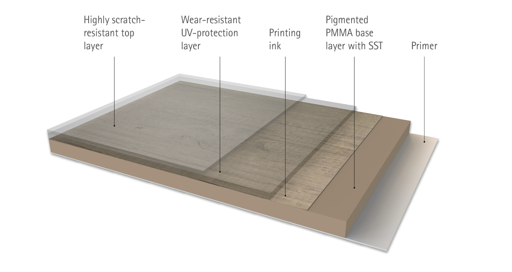

Wood to touch.
PVC to last.
TrueGrain Deck is our flagship capped cellular PVC decking. A laminated wood-grain surface, a weatherable ASA cap, and a moisture-resistant cellular PVC core. Six hardwood-inspired colors, cool underfoot, fastened on top or hidden underneath.
Hardwood look,
none of the upkeep.
We started TrueGrain Deck because composite boards looked plastic from a step away and hardwood needed a sander every couple of seasons. TrueGrain gives you the depth and warmth of real wood grain with the chemistry of cellular PVC underneath.
Real grain texture
Variegated wood-grain laminate you can read across the board, not a stamped repeat.
Cool underfoot
Reflective formulation keeps the surface comfortable through the warmest part of the afternoon.
Capped four sides
Weatherable ASA capstock seals every edge against fade, stain, and moisture intrusion.
Top-fasten or hidden
Solid edge or grooved profiles. Pair grooved TrueGrain with the InvisiClip™ system for no visible screws.
Five bonded layers,
engineered to outlast the deck under them.
Patwin Plastics manufactures TrueGrain in Linden, New Jersey, and laminates the decorative wear face in the same facility that extrudes the board. The film stack shown below is supplied by RENOLIT, the German polymer specialist whose exterior foils are written into architectural specifications across Europe and North America, and it is the one external material Patwin selected for the surface layer. The diagram is the actual layer schedule bonded to every board, reproduced without alteration.

Highly scratch-resistant top layer
A clear, high-hardness surface film engineered to resist abrasion from foot traffic, patio furniture, pet claws, and grit. It is the wear face of the board and the first line of defense in everyday service.
Function: surface durabilityWear-resistant UV-protection layer
A dedicated UV stabilizer layer formulated to absorb solar radiation before it can reach the print or the substrate. It is what keeps the printed wood-grain from fading and what protects the polymer chemistry underneath from photo-degradation.
Function: weathering and color holdPrinting ink
High-resolution rotogravure decor print laid down between the protective films above and the pigmented base below. Captures the variegated grain, pore structure, and tonal depth of real hardwood with edge-to-edge registration on every board.
Function: photorealistic wood-grain decorPigmented PMMA base layer with SST
An acrylic (PMMA) base layer carrying RENOLIT's Solar Shield Technology (SST). SST reflects the near-infrared portion of the solar spectrum so the board runs measurably cooler under direct sun, while the PMMA chemistry delivers the dimensional stability and weatherability acrylic is specified for in exterior cladding.
Function: heat reflection, structural backbone of the filmPrimer
An engineered tie-coat applied to the underside of the film stack. It is the chemical handshake that locks the laminate to the capped cellular PVC substrate, producing a permanent bond rather than a surface-applied coating.
Function: substrate adhesionRENOLIT is a leading global manufacturer of high-performance polymer films. Their exterior foils, including the SST acrylic technology shown above, are used in specification-grade window, door, and cladding products worldwide. The film alone is not the board. What sits beneath it determines how the laminate behaves over twenty-five years in the sun.
Patwin manufactures the entire board.
The laminate is one layer of work we do.
A premium film bonded to a marginal board is a marginal board. Patwin Plastics extrudes the TrueGrain cellular PVC profile, formulates and co-extrudes its own proprietary ASA capstock, and laminates the RENOLIT PMMA film onto the wear face, all in one facility in Linden, New Jersey. Three things separate it from the imported and toll-extruded boards that compete on price.
Patwin proprietary ASA
An ASA (acrylonitrile styrene acrylate) capstock formulated by Patwin and co-extruded on every board. ASA is the chemistry specified for long-term exterior color and gloss retention, and ours is tuned to bond mechanically with the RENOLIT primer above and the cellular core below.
- UV-stable acrylic chemistry, not a PVC overlay
- Caps all four sides of the profile
- Formulated in-house, not sourced as a generic pellet
Cellular PVC with 30% in-house regrind
A closed-cell PVC core engineered for stiffness, screw-hold, and moisture resistance. Thirty percent of the compound is reclaimed in-house regrind from our own extrusion line, an American closed-loop input that keeps the chemistry consistent and the carbon footprint honest.
- Won't rot, won't absorb water, won't host mold
- 30% repurposed polymer, closed-loop, single facility
- Same cellular density across every TrueGrain color
Compound and tooling, in-house
Patwin mixes its own PVC compound on site and designs and cuts its own extrusion dies. Most domestic decking shops do one or the other. Doing both is what lets us control cell structure, wall thickness, and the cap-to-core bond profile, the variables that decide how a laminated board ages.
- PVC compound mixed in Linden, NJ, no pre-mixed pellets
- Dies designed and machined in-house
- Cellular PVC decking extruded under one roof since 2001
Linden, New Jersey, since 2001.
Specified worldwide.
The full technical breakdown, including the substrate spec, is published as a one-page sheet you can send to specifiers, dealers, and partners. View the data sheet → · Download PDF
Hardwood palette,
none of the upkeep.
From weathered coastal greys to deep mahogany. Order the swatch you like and we ship a real 6-inch sample so you can read the grain in your own light.
See every color on your deck before you order.
Upload a photo or pick a render. The TrueGrain visualizer drops each of the six colors onto the deck surface in real time so you can compare against your siding, your trim, and the way your yard takes morning sun.
Built for builders,
written for inspectors.
The numbers your framer, inspector, and architect need. Full installation guides and CAD details live on the decking line page.
- Material
- Capped cellular PVC with laminated decorative surface
- Capstock
- Weatherable ASA, four-sided
- Core
- Cellular PVC, ~30% repurposed polymer content
- Profiles
- Solid edge or grooved (hidden-clip ready)
- Joist spacing
- 16 in. on center maximum, perpendicular install
- Fastening
- Top-fasten with color-matched plugs, or InvisiClip™ hidden fasteners
- Warranty
- 25-year limited residential, 10-year commercial
- Country of origin
- Manufactured in the United States by Patwin Plastics
25-Year limited residential
The TrueGrain decorative exterior foil is warranted against abnormal color change beyond 2 Delta E and against cracking. Full coverage years 1 through 5, prorated thereafter. Residential installations only.
Read the Full WarrantyInvisiClip™ hidden fastener system
InvisiClip works with grooved profiles from both decking lines. On TrueGrain, boards drop in from above with no visible screws on the finished deck. Powered by the Grad System.
See InvisiClip™TrueGrain Deck,
answered.
The questions builders and homeowners ask most about TrueGrain capped PVC decking, answered straight.
What is TrueGrain Deck?
TrueGrain Deck is American Pro's flagship capped cellular PVC decking. A decorative wood-grain foil is laminated to a weatherable ASA capstock, which seals a moisture-resistant cellular PVC core on all four sides. The result is a board that looks and feels like premium hardwood with the strength and low-maintenance profile of cellular PVC.
What colors does TrueGrain Deck come in?
Six hardwood-inspired colors: New England Birch (weathered silver-grey), Coastal Driftwood (soft warm grey), Aged Oak (golden tan, open grain), Embered Taupe (warm smoky brown), Royal IPE (deep mahogany amber), and Tropical Walnut (dark walnut grain).
What is the TrueGrain warranty?
The TrueGrain decorative exterior foil carries a 25-year limited residential warranty against abnormal color change beyond 2 Delta E and against cracking. Full coverage years 1 through 5, prorated thereafter. Residential installations only.
Can TrueGrain be installed with hidden fasteners?
Yes. Grooved TrueGrain profiles install with the InvisiClip hidden fastener system, powered by the Grad System. Engineered POM clips snap onto pre-fastened aluminum rails so boards drop in from above with no visible screws.
Does TrueGrain work with universal side-clip systems too?
Yes. Because grooved TrueGrain uses a standard groove geometry, it is not limited to InvisiClip. The same grooved boards also accept universal side-edge hidden clip systems made for grooved decking, such as CAMO EDGE and WEDGE clips and Starborn Clip & Rip. That lets a builder use the hidden fastener line they already stock while still getting a clean, screw-free deck surface.
Is TrueGrain cool to walk on barefoot?
Yes. TrueGrain Deck uses cool-deck technology that reflects more solar energy than dark composite decking. The capstock and decorative foil are formulated to stay comfortable underfoot through the warmest part of the afternoon, especially in lighter colors.
Is TrueGrain Deck made in the USA?
Yes. Every TrueGrain board is extruded by Patwin Plastics at its vertically integrated polymer extrusion facility in Linden, New Jersey. The PVC core, capstock, and decorative finish are produced on the same domestic line.
How do I maintain TrueGrain decking?
Routine cleaning with soap and water is all that is needed. Because TrueGrain is capped cellular PVC with no exposed wood fiber, it never needs sanding, staining, or sealing the way wood does, and it will not splinter, rot, or grey out over time.
Can I order a free TrueGrain sample?
Yes. Free 6-inch hand samples of any TrueGrain color can be requested through the samples form on this page, so the grain and color can be evaluated in your own light before you order a full deck.
Talk to a dealer who stocks it.
TrueGrain Deck is shipping factory-direct while we build out the stocking dealer network through 2026. Call us and we will route your project to the nearest TrueGrain partner, or ship grooved profiles directly from Linden, NJ.
Talk to American Pro
TrueGrain Deck is new to the dealer floor. Until the stocking partners come online, the fastest path is to call us. We will confirm color availability, quote grooved profiles for InvisiClip, and route your job to the closest dealer once they are announced.
1-877-442-6776 · Contact us for a TrueGrain quote
See it in your light.
We mail real cut sections of TrueGrain Deck to your door at no charge. Hold the grain against your siding, your trim, and the way your yard takes morning sun.
Pick the colors you want to see. We ship 6-inch sample sections in a padded mailer with the spec sheet and a color guide.
- Real 6-inch TrueGrain sections, full lamination
- Free shipping anywhere in the continental U.S.
- Optional InvisiClip™ clip and rail piece to test the snap